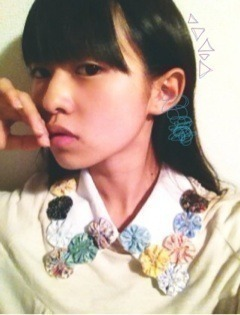

| 2012/09 25 Tue | 240回目*marika |
いつも読んでくださってる方、
初めて読んでくださった方、
コメントしてくださった方、
ありがとうございます♪
ウオッフォン
なんかなんかなんか
質問回答大量な気がするよ！
長いよ！
あ！焼きトマト美味でした！
焼くだけなのに！
*********
 秋服はスカートか
秋服はスカートか
ズボンだとどっちが多い？
 年中履けるズボンは
年中履けるズボンは
たくさんあります‼
秋服というか、スカートも
ワンピースもけっこうあります

がうっちってなに？(´・ω・`)?
だーいぶ前なんとなく
変な擬音を書いてたんですけど、
ある時パソコンで「がうっ」の
「っ」を打ちすぎてたら最後「ち」を
間違えて打ってしまったのが
始まりです

がうっちがうっち笑
ランニングは好き？
すきですね。
ってかしてない;(
朝しよっと！
Tシャツorシャツどっち派？
どっちもすき！決められん！
でも、今シャツのボタン上まで
きっちりとめたスタイルすきです

これからずっと
まりかちゃんファンになっていい？
はい！応援よろしくお願いします><
もし自分の好きな服のデザインが
商品になるとしたら
どんなイメージの服？
手作り感があって
毒々しくてかわいらしいのかな
マイブームって何？
朝スムージー作って飲むこと。
かわいいお店探し。
他に、まりかちゃんの
得意料理って何？
ない...って言ったら
ダメでしょうか
一人暮らしとかするようになった時、
おしゃれなのをちょいちょいっと
作れるようになりたい。本当に
ブログのコメした人の名前
って覚えてる？
覚えてたらその名前で行きます( ・∀・)
いつもコメントしてくださる方は
きっとわかります

でも、ど忘れもあります。
その時はごめんなさい。
おしゃれ担当万理華の秋に
注目してるアイテムは
なんですかー？？
秋物の服を買いに行きたいんだけど
オススメとか流行りものを教えて！
メンズで、ワンポイントなにか
アイテムを使うとしたら、
どういうのが好きorオススメかな？
流行とか実はあまり詳しくない

私は今タイトスカートと
クロップドパンツ気になる。
あと、スウェットパンツを
私服として着こなしたり！
秋服が英国とかおじさんのイメージが
あるからテーラードジャケットは
着まわしできそう...
んーわからん！
そんな参考にしないでください


好きなキャラクターはいますか？☆
今は、そんなにないです。
髪の毛絶対に切る事しないよね？
ロングのままだよね？
ありゃ。切らないでほしい？
今のところ切る予定ないけど...
もしかしたらいつの間にか
バッサリ!!!!!とかあるかもね
最近仕事中にまりかのことを
想ってて、仕事になりません(´Д｀)笑
どうしたらいいですか？
きゃあ

って、だめよ！
お仕事応援してます
 ファイっ！
ファイっ！
ファイっ！
女子中学生に好きって
言われて嬉しいですか？
嬉しくないわけない
 ！
！
乃木坂のメンバーの中で
ペットにしたい人ゎ?
まひろ。
持ってる帽子の中で
1番何色の帽子が多い??
パープルが2色ある...
あとはばらばら。
明るい色はそんなに持ってないな。
勝負事をする時に
必ずやる事ってあったりする？
夜お願いごとする。
ママにはトンカツとか
作ってもらってたなぁ...
いとうちゃんず片割れの
地元岐阜にはいったことある？
あるよーーーー！
いつもお口をあけて
寝てるのですか？(^_^)
そんなわけ...っっ
**********
かわいいものを見るのがすきだ。
ガラスケースに飾られた
キッチュでカラフルな雑貨を
見るのがすきだ。
その雑貨達を両手いっぱいに
抱えてみたい。
ボロボロこぼれ落ちるくらい。
おにゃのこの夢だ。
あーお部屋をかわいいもので
いっぱいにしたいよー


かわいいつけ襟。

では、おやすみなさい。‼
まりか
コメント(184)
2012/09/25 21:12